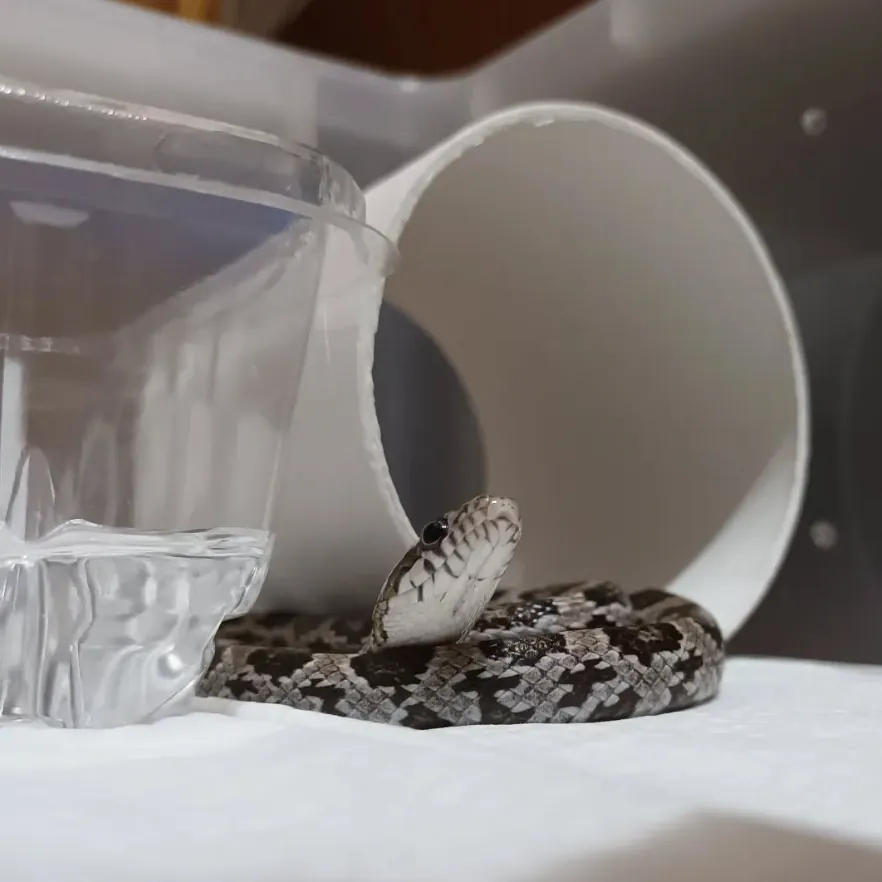
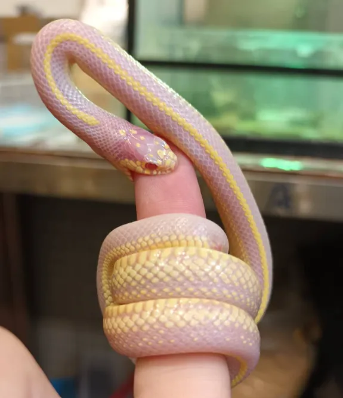

將蛇作為伴侶動物，在多數社會認知中常被歸類為邊緣且異常的選擇。然而，若屏除主觀的恐懼濾鏡與文化偏見，單從系統維護的成本與投入產出比 (ROI) 進行理性評估，蛇類實為極具邏輯性的現代生活配備。

# 認知誤差與風險控管

關於被咬的風險，這是一個常被影視媒體過度放大的認知誤差。
根據實際飼養數據，多數人工繁殖的寵物蛇性格穩定，攻擊閾值極高。即便發生物理咬傷，其細小的齒列結構導致的創口更接近於魔鬼氈的淺層穿刺，常規清洗消毒即可排除感染風險。建立穩定的飼養環境與清晰的互動邊界，是將風險降至最低的基礎操作。當然，此原則不適用於缺乏可預測性的野生個體，保持觀察距離是跨物種互動的基本常識。
# 系統化飼養的絕對優勢
從觀察者的角度而言，蛇類提供了一種低功耗的動態視覺回饋。牠們多數時間處於低代謝的靜態蟄伏，但在進食或探索環境時所展現的生物力學與本能行為（如偶發的判定失誤），具備高度的研究與觀賞價值。
更核心的決策依據在於維護成本的極小化。對於高負荷運轉的現代人而言，牠們是理想的共居生物：
- 能量轉換率極高： 進食週期長達一至兩週一次，且代謝緩慢，排泄物清理頻率極低。
- 環境相容性強： 僅需建構並維持溫濕度穩定的封閉微氣候（飼養箱），無須耗費時間進行外部活動消耗精力，完全支援長期出差或旅遊的排程。
- 空間與干擾最小化： 單位空間需求極小，且具備零噪音輸出的特性，完美契合高密度的都市居住型態。
- 系統防呆需求： 確保物理邊界（防逃脫機制）的絕對完整性，是飼養過程中唯一需要嚴格執行的防錯規範。一旦邊界失效，尋回成本將呈指數型上升。
綜合上述參數，若需求為建立具備觀賞價值、且不干擾既有生活排程的生物觀察系統，蛇類無疑是具備最高 CP 值的選項。
生態倫理與系統邊界
引入非原生種伴侶動物是一項具備長期責任的系統決策。絕對禁止任意野放。此行為不僅違背個體生存邏輯，更會對本土生態系統引發不可逆的連鎖崩壞。控制變因，維持邊界，是觀察者的基本素養。
本月主題為「推坑」。透過理性梳理，提供另一種觀察生命的分析視角。